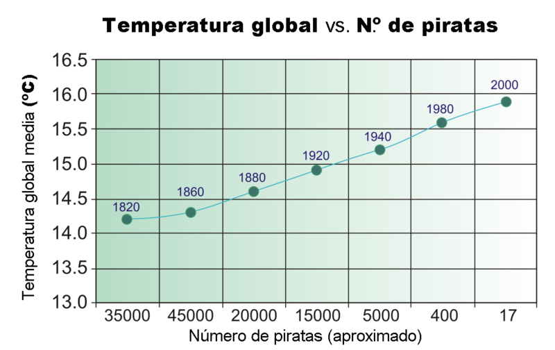

Necesitamos interpretar nuestro modelo
¡Qué investigación estadística más interesante estamos realizando! Ya hemos recopilado nuestros datos empíricos y nuestra hoja de cálculo ha trazado la recta de regresión.
Pero nos surgen algunas dudas a la hora de interpretar los números que nos ha dado el ordenador:
- ¿Qué significa que la correlación sea positiva o negativa?
- ¿Podemos predecir cuántas horas dormirá un compañero si sabemos cuánto usa el móvil?
- ¿Nuestras predicciones van a ser fiables al 100%?
- ¿Podemos asegurar que el móvil es la "causa" del insomnio?
Para solucionar esta situación, es recomendable entrenar nuestra capacidad de interpretación estadística antes de redactar las conclusiones de nuestro informe final.
Consejo
Si aprendemos a interpretar correctamente el coeficiente de correlación (r) y el coeficiente de determinación (R²), nuestro proyecto tendrá un rigor matemático excelente y nuestras predicciones serán válidas para la realidad de nuestro centro.
Correlación no es Causalidad
Lo primero que tenemos que hacer es entender qué nos dicen nuestros gráficos. Si la línea de nuestra nube de puntos va hacia arriba, las dos variables aumentan juntas (correlación positiva). Si va hacia abajo, cuando una aumenta la otra disminuye (correlación negativa).
Pero hay un peligro matemático muy común: pensar que una cosa provoca la otra.
¿Qué es la Causalidad?
A veces, dos sucesos están matemáticamente correlacionados, pero eso no significa que uno cause directamente el otro. Para demostrar esta trampa estadística, en 2005 Bobby Henderson utilizó un ejemplo muy cómico y famoso: Los piratas y el calentamiento global.
{kind=link}

Henderson demostró mediante un gráfico que existe una correlación matemática inversa casi perfecta entre el aumento de las temperaturas del planeta y la disminución de la cantidad de piratas en el mundo desde el año 1820. De hecho, bromeaba señalando que Somalia, que tiene el mayor número de piratas, tiene también las menores emisiones de carbono.
¿Significa esto que la falta de piratas está provocando el cambio climático? ¿Para enfriar el planeta deberíamos disfrazarnos todos de piratas? ¡Evidentemente no! Henderson usó este absurdo lógico para burlarse de quienes afirman cosas solo basándose en coincidencias numéricas.
Por tanto, cuando analicéis vuestros propios datos (por ejemplo, las horas de móvil y las calificaciones), tened mucho cuidado: que la hoja de cálculo os dé una fuerte correlación solo significa que las variables se mueven juntas, pero no demuestra que una sea la causa de la otra. ¡No caigáis en la trampa de los piratas!
¡Pasamos a la acción!
Vamos a comprobar si sabéis interpretar los resultados de una hoja de cálculo y realizar estimaciones estadísticas.
Utilizando el sentido estocástico y la lógica matemática, contestad a las siguientes preguntas:
Responde a las preguntas del cuestionario
Añadimos variables ocultas
¡Muy bien! Ahora ya sabéis realizar e interpretar modelos matemáticos mediante la hoja de cálculo. Pero para poner a prueba vuestro pensamiento crítico frente a la desinformación, vamos a dar un paso más y trabajar con datos auténticos de nuestro país.
Como hemos estudiado, la mejor forma de no caer en trampas estadísticas ni dejarnos engañar por titulares falsos es acudir a fuentes oficiales. Por ello, vamos a utilizar la base de datos del Instituto Nacional de Estadística (INE).
Por grupos, acceded a la página web del INE (ine.es) e investigad las tres situaciones reales que os planteamos a continuación. En todas ellas los datos oficiales arrojan una altísima correlación matemática. Vuestro reto será aplicar el sentido estocástico para debatir y descubrir qué terceras variables (o variables ocultas) sociológicas, climáticas o económicas están provocando esos resultados sin que exista una causalidad directa pura:
Situación 1
- Ruta de búsqueda: Web del INE → Encuesta sobre equipamiento y uso de TIC en los hogares.
- Variables a localizar: "Renta neta media por hogar" frente a "Número de ordenadores", "Acceso a Internet" o "Disponibilidad de tabletas".
- Vuestro reto: Al cruzar la información, los datos muestran una fuerte correlación positiva entre la renta media de los hogares y el número de dispositivos tecnológicos disponibles. ¿Podemos afirmar analíticamente que comprar más ordenadores provoca que una familia gane más dinero? Aplicando el sentido crítico, debatid en grupo e identificad la variable oculta de nivel socioeconómico que explica la direccionalidad lógica de esta relación.
Situación 2
- Ruta de búsqueda: Web del INE → Encuesta Europea de Salud.
- Variables a localizar: "Personas que realizan actividad física" frente al "IMC medio" o el "Porcentaje de obesidad" por comunidades.
- Vuestro reto: Los datos evidencian que las comunidades con mayor práctica deportiva suelen presentar menores tasas de obesidad. Sin embargo, ¿significa esto matemáticamente que el deporte es el único factor causante que explica la obesidad? Investigad y enumerad en vuestro cuaderno qué otras variables ocultas (como la alimentación, la edad, la renta o el nivel educativo) demuestran que la realidad sanitaria es multifactorial.
Situación 3
- Ruta de búsqueda: Web del INE → Cruzad los datos de la Encuesta de ocupación hotelera con los de los Indicadores medioambientales o estadísticas del agua.
- Variables a localizar: "Número de turistas" frente al "Consumo de agua" en los meses de verano.
- Vuestro reto: En la época estival se observa una fortísima correlación positiva entre la llegada de turistas a una zona y el aumento del consumo de agua. ¿Debemos concluir empíricamente que los turistas tienen más sed y beben mucha más agua que la población local? Utilizad el pensamiento lateral para identificar qué variables ocultas estructurales (piscinas, campos de golf, servicios de limpieza en hoteles o altas temperaturas) explican esta trampa intuitiva.
Tomamos una decisión
Os habréis dado cuenta de que, si no se estructuran bien los datos y no se selecciona el modelo matemático adecuado, la cantidad de información estadística que obtenemos es excesiva, por lo que va a ser muy difícil diseñar un informe final claro para vuestra investigación.
- ¿Cómo podemos evitarlo? Fijando los parámetros de nuestro estudio con respecto a:
- La temática principal que vamos a analizar con nuestra encuesta.
- La elección clara de cuál es nuestra Variable Independiente () y nuestra Variable Dependiente ().
- El cálculo matemático de nuestra recta de regresión y de los coeficientes de correlación y determinación.
- La justificación crítica de los resultados, identificando posibles variables ocultas.
Para definirlo, completad la siguiente tabla y recordad que debéis justificar vuestra decisión apoyándoos en los datos obtenidos en vuestra hoja de cálculo:
| Temática de nuestro estudio: | |
| Variable Independiente (X): | |
| Variable Dependiente (Y): | |
| Ecuación de la Recta de Regresión (Y = aX + b): | |
| Coeficiente de Correlación lineal (r) y tipo: | |
| Coeficiente de Determinación (R²): | |
| Fiabilidad de nuestras predicciones: | |
| Conclusión: ¿Existe causalidad directa o variables ocultas?: |
Lectura facilitada
Os habréis dado cuenta de que si no se pone ninguna restricción con respecto a los colores o al orden, el número de toldos distintos que nos puede salir es excesivo, por lo que va a ser muy difícil diseñar un modelo o prototipo
¿Cómo podemos evitarlo? Fijando restricciones con respecto a:
El número total de colores que vamos a utilizar en el toldo.
El número máximo de colores que puede aparecer en cada cuadrado granny.
El orden en el que pueden aparecer los colores en cada cuadrado granny.
La repetición de colores en un mismo cuadrado granny.
Para definirlo, completad la siguiente tabla y recordad que debéis justificar vuestra decisión:
Tamaño del cuadrado granny (centímetros)
Número de cuadrados concéntricos
Grosor material (vueltas/pulgada)
Cantidad material (metros)
Nº de colores totales del toldo
Nº de colores totales por cuadrado granny
Audio
Descripción de la tarea
Apoyo visual

¡Importante!
Definir estos parámetros estadísticos os ayudará a elaborar un informe de investigación riguroso y fundamentado en datos. Sin embargo, es importante recordar que en las Ciencias Sociales los fenómenos suelen estar influenciados por múltiples factores y no siempre pueden explicarse mediante una única variable. Por ello, al presentar vuestras conclusiones, debéis interpretar los resultados con sentido crítico, reconocer las posibles limitaciones del estudio y reflexionar sobre otras variables que podrían estar influyendo en las relaciones observadas.
¡Practicamos lo aprendido!
El equipo de investigación de vuestra clase ha decidido analizar matemáticamente nuestros propios hábitos para dar respuesta a un reto fundamental: ¿Somos realmente dueños de nuestro tiempo libre?
Tras recopilar la información de todos los compañeros mediante el formulario digital y procesarla de forma cooperativa en la hoja de cálculo, habéis analizado variables bidimensionales como el "tiempo de uso del móvil", las "horas de sueño", el "rendimiento académico" y el "deporte".
Ahora, antes de defender vuestro informe final, es el momento de demostrar que domináis los modelos lineales y que sois capaces de interpretar parámetros como el coeficiente de correlación (r), la recta de regresión y el coeficiente de determinación (R²), aplicando el espíritu crítico para no caer en las trampas de las variables ocultas.
Selecciona las respuestas correctas y pulsa sobre el botón «Responder».
Recursos y evaluación de los aprendizajes
Recursos
- Hoja de cálculo que permita automatizar el cálculo algorítmico rutinario (covarianza, coeficiente de correlación lineal y trazado de la recta de regresión) y generar los gráficos bidimensionales o nubes de puntos.
- Dispositivos con conexión a Internet que permita acceder a las encuestas oficiales del Instituto Nacional de Estadística (INE) e investigar las variables sociológicas.
Productos evaluables
- Procesamiento de datos y modelización: Uso correcto de las fórmulas y comandos del software para calcular las rectas de regresión de forma autónoma.
- Decisión final del modelo matemático: Completar la tabla de decisión estructurando correctamente la Variable Independiente (X) y la Variable Dependiente (Y) del proyecto.
- Interpretación analítica: Justificación crítica de los resultados, demostrando la comprensión de la diferencia entre correlación estadística y causalidad (identificación de variables ocultas).